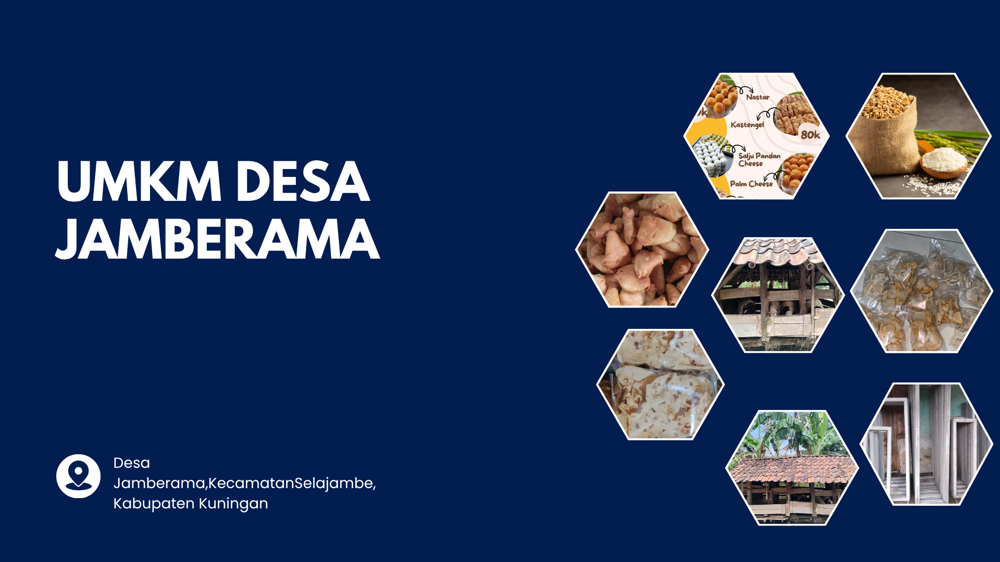
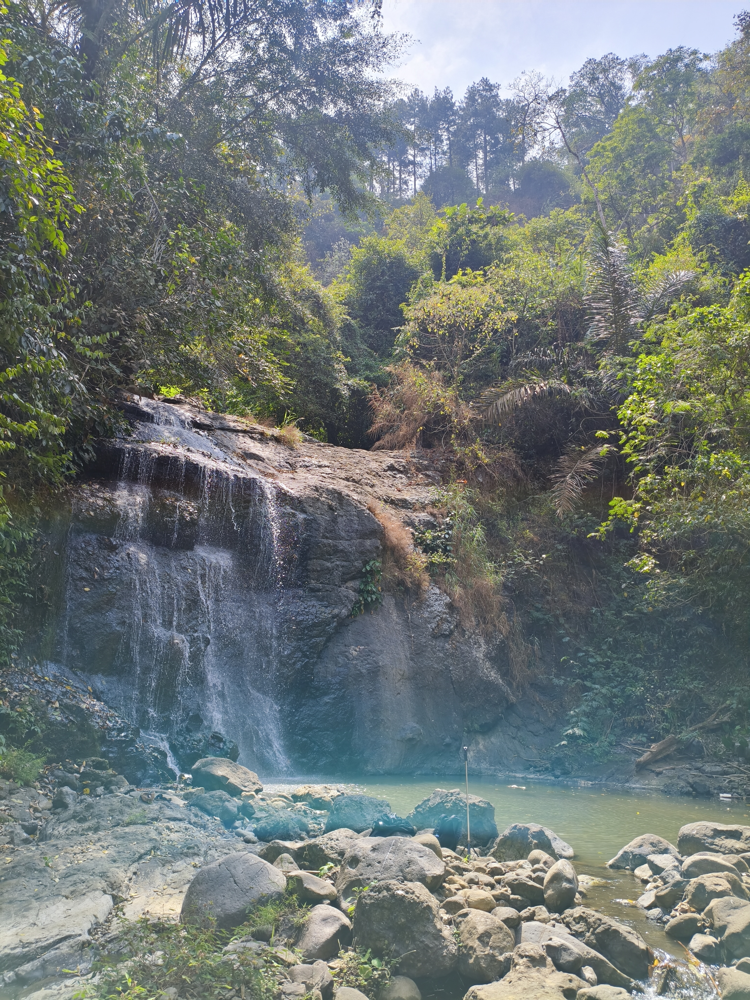

Tentang desa jamberama
Sejarah asal usul Desa Jamberama secara historis memang benar Dusun Cilimus dulunya merupakan pusat pemukiman dan cikal bakal dari Desa Cidadap, yang kemudian berganti nama dan berkembang menjadi Desa Selajambe (sekarang menjadi pusat Kecamatan Selajambe, Kuningan). Fakta Sejarah Hubungan Cilimus dan Cidadap Awal Mula Pendirian: Desa Jamberama dari pemekaran Desa Selajambe pertama kali didirikan pada tahun 1789 M dengan nama awal Desa Cidadap. Pusat Pemukiman di Cilimus: Ibu kota dan pusat awal masyarakat bermukim berada di kawasan yang dinamakan Cilimus, yang letaknya berada di dekat kaki gunung/hutan negara yang mengalir air sungai Cilimus di sebelah utara Sungai Cijolang. Perkembangan Jaman semakin maju : Seiring berjalannya waktu,maka memisahkan dipekarkan Desa menjadi Desa Jamberama, sementara nama Cilimus tetap melekat sebagai Dusun bagian dari sejarah lokal wilayah tersebut.. Desa Jamberama asal mulanya disebut Desa CIDADAP yang ber-Ibu Kota di CILIMUS dekat kaki gunung kehutanan Negara atau sebelah utara dari kali Cijolang. Desa Cidadap didirikan + pada tahun 1789 M, yang dipinpin oleh seorang Kepala Desa Wanita yaitu yang namanya tidak dikenal dan dibantu oleh para Lelugu Kampung dan seorang Kabayan. Dalam Memangku jabatannya, beliau sebagai Kepala Desa sangat baik dan supel, bertanggung jawab terhadap rakyatnya dan tidak terpaku kepada adapt peraturan Pemerintah Penjajah Belanda. Mata pencaharian rakayat pada waktu itu yaitu bercocok tanam/bertani dan tanaman yang diutamakan adalah padi sawah, padi huma dan umbi-umbian, dengan sistim bertani tidak menetap atau berpindah-pindah tempat, karena setelah tanah-tanah tersebut kurang subur mereka meninggalkannya dan mencari / memilih lagi tanah masih subur. Bangunan-bangunan perumahan rakyat dan pemerintah pada waktu itu dibuat dari bahan kayu, bamboo yang beratapkan alang-alang dan ijuk dengan model bangunan sangat kasar sekali bahannya tebal tanpa ukiran potongan yang sederhana tapi cukup kuat dan tahap lama. Penduduk pada waktu itu beragama islam kehindu-hinduan dan kesenian tradisional rakyat pada waktu itu sudah ampak seperti dog dog untuk hiburan ngareog dan dapat dipentaskan pada acara Khitanan, pernikahan dll, dan seni genjringpun dipentaskan pada bulan mulud yang tempatnya dilaksanakan di Mesjid dan Langgar-langgar. Seperangkat Goong pun sudah ada, yang digunakan untuk seni Tayuban yang setiap tahun dilaksanakan acara Hajat Desa/Tahunan dengan disebut Babaritan. Berhubung keadaan penduduk pada waktu itu merasa tidak aman dari gangguan-gangguan binatang buas seperti harimau, babi hutan dll, yang selalu mengganggu ketertiban rakyat terutama sekali merusak tanam-tanaman pertanian rakyat, maka penduduk desa tersebut berusaha untuk menghindari dari gangguan-gangguan binatang tersebut dengan jalan berpidah tempat ketempat yang lebih aman sambil bercocok tanam tetapi perpidahan tempat itu tidak jauh dari dari tempat asal hanya beberap kilometer saja. Seiring dengan perkembangan jumlah Penduduk semakin pesat, dan kondisi sudah aman dan setabil jauh dari gangguan hewan buas maka tempat tingal pendudukpun terus menyebar kearah Utara lagi yang nyelusurii aliran sungai cilimus, sehingga pada tahun 1982 memisahkan diri dari desa Selajambe menjadi Desa Jamberama sampai sekarang, dengan mengambil nama Desa Dari situs yang ada depan Bale Desa nama situs Eyang Daka dengan Blok Jamberama.
Infomasi Desa Jamberama
Produk Umkm Desa Jamberama

Objek Wisata Desa Jamberama

Pusat Informasi Map Desa

Galeri Mahasiswa Kkn